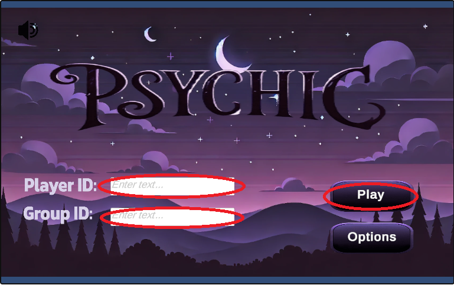

Are you Pychic?
Understanding p-values in research studies
Contributors: Shonda Kuiper, DASIL
Contributors: Shonda Kuiper, DASIL
Figure 1: Settings to start Psychic game
The above activity can be used to explain the core ideas behind all statistical hypothesis tests. Hypothesis testing is a process used to determine whether an event can reasonably be attributed to chance or whether there is some other explanation
For example, let’s assume your friend, Akilah, claims to be psychic and you decide to test this claim using a test similar to the one above. There are two possible conclusions we can make.
Based on the data visualization in Part 1C, we can make conclusions based on Akilah’s score.
If Akilah played your game and got 4 out of 10 correct, she would have done better than expected. However, the theoretical distribution in the above app shows us that 12% of the time people can get 4 or more correct just by random chance. In terms of a statistical hypothesis test, the p-value = 0.12 does not give us enough evidence to reject Claim 1.
A p-value is a number between 0 and 1 that we use to quantify our decision. A p-value is the probability of observing an outcome assuming that the null hypothesis is true. When a p-value is very small, it means it is very unlikely that the null hypothesis is true.
For example, if the null hypothesis is true (p = 0.2) the probability that Akilah correctly guesses 6 or more cards is 0.01. This may cause us to question the null hypothesis and conclude that something is helping Akilah correctly guess the cards.
However, a p-value never proves that our alternative hypothesis is true, it simply tells us how unlikely the null hypothesis is when only random chance is involved. Remember that a p-value = 0.01 means that 1 out of 100 times someone will correctly guess 6 or more cards just by random chance even when the null hypothesis is true.
Shannon, Joel, Feb 2019, Adorable animals across the nation are making Super Bowl predictions, USA Today. https://www.usatoday.com/story/news/nation/2019/02/03/animals-predict-super-bowl-outcome/2756507002/
Dataspace is supported by the Grinnell College Innovation Fund and was developed by Grinnell College faculty and students. Partial support provided by the Transforming Undergraduate Education in Science (TUES) program at the National Science Foundation under DUE#0510392, DUE #1043814, and DUE #1712475. Copyright © 2021. All rights reserved
This page was last updated on 5 August 2022.